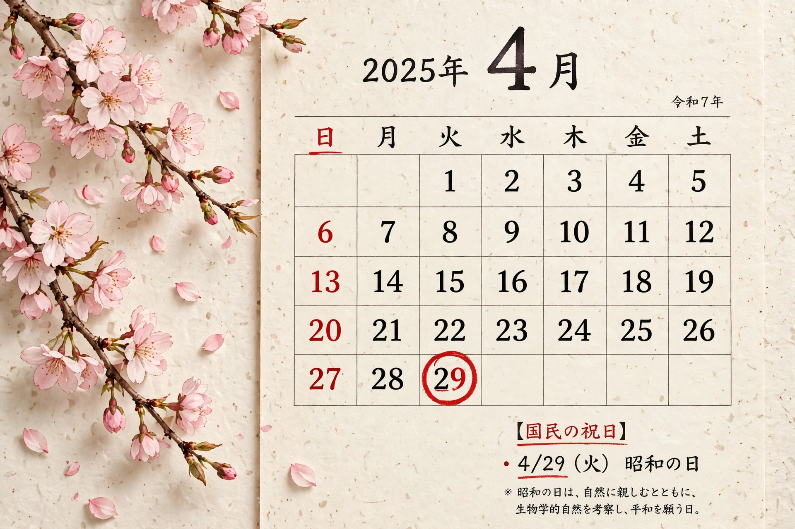

| Observed by | Japan |
|---|---|
| Number | 16 national holidays |
| Legal basis | Public Holiday Law (1948) |
| Features | Happy Monday System; citizen's holiday (kokumin no kyūjitsu); substitute holidays |

Public holidays in Japan (国民の祝日, kokumin no shukujitsu) are established by the Public Holiday Law of 1948, which currently designates 16 national holidays. When a holiday falls on a Sunday, the following Monday becomes a substitute holiday; a weekday sandwiched between two holidays becomes a "citizen's holiday". Since 2000, the Happy Monday System has moved several holidays to Mondays to create long weekends.
| Date | Holiday |
|---|---|
| 1 January | New Year's Day (元日) |
| Second Monday of January | Coming of Age Day (成人の日) |
| 11 February | National Foundation Day (建国記念の日) |
| 23 February | The Emperor's Birthday (天皇誕生日) |
| Around 20 March | Vernal Equinox Day (春分の日) |
| 29 April | Shōwa Day (昭和の日) |
| 3 May | Constitution Memorial Day (憲法記念日) |
| 4 May | Greenery Day (みどりの日) |
| 5 May | Children's Day (こどもの日) |
| Third Monday of July | Marine Day (海の日) |
| 11 August | Mountain Day (山の日) |
| Third Monday of September | Respect for the Aged Day (敬老の日) |
| Around 22–23 September | Autumnal Equinox Day (秋分の日) |
| Second Monday of October | Sports Day (スポーツの日) |
| 3 November | Culture Day (文化の日) |
| 23 November | Labour Thanksgiving Day (勤労感謝の日) |
The sequence of holidays from late April to early May forms Golden Week, one of Japan's busiest travel periods; mid-September's holidays can similarly combine into "Silver Week". Mountain Day, added in 2016, is the newest holiday.